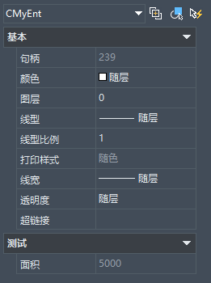
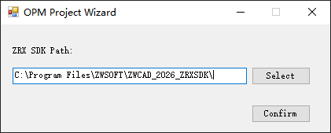
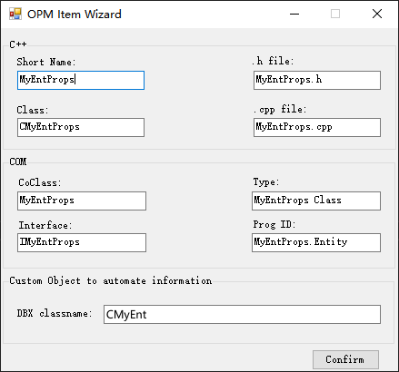
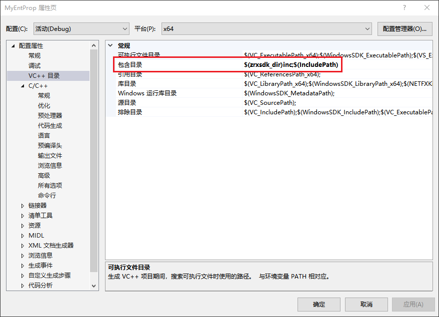

上一节我们创建了一个简单的自定义实体，但是此时属性面板上仅会展示最基本的实体信息，而我们可能还需要显示一些自定义实体的属性，这就需要使用到OPM面板来自定义属性面板上的内容。

使用创建OPM工程
1. 在当前解决方案中根据下方图片中的选项添加 ZRX project template for OPM 新工程，在向导对话框中修改SDK所在路径：

2. 在新创建的工程中根据下方图片中的选项选择添加 ZrxATLComWizard 新项目，对话框中填入类名，在 DBX classname 中填入自定义实体的类名：

编辑自定义实体类
本节示例中我们需要获取自定义实体三角形的面积，需要先在自定义实体中创建相应接口用于获取面积，同时还需要创建两个方法用于注册和获取CLSID：
// 导出CMyEnt接口
class __declspec(dllexport) CMyEnt : public ZcDbEntity
{
...
public:
...
// 获取面积
double area() const;
// 获取CLSID
virtual Zcad::ErrorStatus subGetClassID(CLSID* pClsid) const;
// 注册CLSID
static void initCLSID();
private:
...
static bool s_bHasClsid;
static CLSID s_clsid;
}
double CMyEnt::area() const {
assertReadEnabled();
ZcDbPolyline* pPoly = new ZcDbPolyline();
for (int i = 0; i < 3; ++i) {
pPoly->addVertexAt(i, ZcGePoint2d(m_verts[i].x, m_verts[i].y));
}
pPoly->setClosed(true);
double res;
pPoly->getArea(res);
delete pPoly;
return res;
}
// 初始化
bool CMyEnt::s_bHasClsid = false;
CLSID CMyEnt::s_clsid;
Zcad::ErrorStatus CMyEnt::subGetClassID(CLSID* pClsid) const {
assertReadEnabled();
if (s_bHasClsid)
{
*pClsid = s_clsid;
return Zcad::eOk;
}
else
{
return Zcad::eNotImplementedYet;
}
}
void CMyEnt::initCLSID() {
// 将要注册的COM名称修改为自定义的字符串，注意不要设置为已被使用过的名称
s_bHasClsid = SUCCEEDED(CLSIDFromProgID(L"MyCustEntProp.Entity", &s_clsid));
if (!s_bHasClsid) {
// 修改为自定义实体的ZRX文件名
HMODULE hModule = GetModuleHandle(L"ZrxSample.zrx");
TCHAR szBuf[MAX_PATH] = { 0 };
::GetModuleFileName(hModule, szBuf, MAX_PATH);
// 修改为OPM工程生成的dll名称
_tcscpy(szBuf + _tcslen(szBuf) - _tcslen(_T("ZrxSample.zrx")), _T("MyEntProp.dll"));
HMODULE hMod = ::LoadLibrary(szBuf);
if (hMod)
{
typedef HRESULT(WINAPI *SETUP)(void);
SETUP pSetUp = (SETUP)GetProcAddress(hMod, "SetUp");
if (pSetUp)
{
pSetUp();
s_bHasClsid = SUCCEEDED(CLSIDFromProgID(L"MyCustEntProp.Entity", &s_clsid));
}
::FreeLibrary(hMod);
}
}
}
编辑OPM工程
1. 打开工程属性页，选中“VC++目录”项，在“包含目录”中添加SDK下的inc目录路径：

2. 打开MyEntProp.idl文件，将其中“ZwAuto.dll”字符串修改为“zwcad25.tlb”，同时在默认生成的接口IMyCustEntProp中添加以下代码：
...
interface IMyCustEntProp : IZcadEntity {
[propget, id(1), helpstring("获取三角形的面积")] HRESULT Area([out, retval] DOUBLE* pVal);
};
...
注：如果需要创建能够设置的属性项，可以参考SDK示例中相关部分idl中代码写法。
3. 添加自定义实体头文件，并引入lib文件，用于访问自定义实体相关方法
#include "../ZrxSample/MyEnt.h" #pragma comment(lib, "../Out/bin/Debug_x64/ZrxSample.lib")
4. 打开OPM类头文件，本节中是MyCustEntProp.h文件
// 添加调用自定义实体接口的方法，用于获取自定义实体的面积 ... //------------------------------------------------------------------------------- //----IMyCustEntProp //----Declare the virtual functions of MyEntProp_h.h STDMETHOD(get_Area)(DOUBLE* pVal); ...
// 添加属性面板项的设置
...
//-------------------------------------------------------------------------------
//----IOPMPropertyExtension
BEGIN_OPMPROP_MAP()
OPMPROP_ENTRY(0, 0x01, 1, 0, 0, 0, L"", 0, 0, IID_NULL, IID_NULL, "")
END_OPMPROP_MAP()
/* OPMPROP_ENTRY参数：
* DescriptionID：默认0
* dispID：显示顺序编号，要与idl文件中设置的id值对应
* catagoryID：分组的ID
* catagoryNameID：默认0
* elements string list ID (semi-colon separator) ：默认0
* predefined strings ID (semi-colon separator) ：默认0
* predefined values：默认_T("")
* grouping：默认0
* editable：是否可编辑：1-可编辑；0-不能编辑
* property：默认 IID_NULL
* other：默认 IID_NULL
* proppage：默认 ""
*/
...
// 添加两个虚函数，用于设置属性面板中显示的属性名
...
virtual HRESULT STDMETHODCALLTYPE GetDisplayName(
DISPID dispID,
BSTR* propName
);
virtual HRESULT STDMETHODCALLTYPE GetCategoryName(
PROPCAT CatID,
LCID lCid,
BSTR * pCategoryName
);
...
5. 打开OPM的cpp文件，实现相关函数
STDMETHODIMP CMyCustEntProp::get_Area(DOUBLE* pVal)
{
AFX_MANAGE_STATE(AfxGetStaticModuleState());
CHECKOUTPARAM(pVal);
try
{
Zcad::ErrorStatus es;
ZcDbObjectPointer<CMyEnt> pEnt(m_objId, ZcDb::kForRead);
if (pEnt.openStatus() != Zcad::eOk) throw pEnt.openStatus();
*pVal = pEnt->area();
}
catch (const std::exception&)
{
return Error(L"Failed to open object.", IID_IMyCustEntProp, E_FAIL);
}
return S_OK;
}
HRESULT CMyCustEntProp::CreateNewObject(ZcDbObjectId& objId, ZcDbObjectId& ownerId, TCHAR* keyName)
{
try
{
ZXEntityDocLock(ownerId);
Zcad::ErrorStatus es;
CMyEnt *pSign = (CMyEnt*)CMyEnt::desc()->create();
if (NULL == pSign)
throw Zcad::eOutOfMemory;
ZcDbDatabase* pDb = ownerId.database();
pSign->setDatabaseDefaults(pDb);
ZcDbBlockTableRecordPointer pBlockTableRecord(ownerId, ZcDb::kForWrite);
if ((es = pBlockTableRecord.openStatus()) != Zcad::eOk)
{
delete pSign;
throw es;
}
if ((es = pBlockTableRecord->appendZcDbEntity(objId, pSign)) != Zcad::eOk)
{
delete pSign;
throw es;
}
pSign->close();
}
catch (const Zcad::ErrorStatus)
{
return Error(L"Failed to create Smiley through entity interface.", IID_IMyCustEntProp, E_FAIL);
}
return S_OK;
}
STDMETHODIMP CMyCustEntProp::GetElementValue(
DISPID dispID,
DWORD dwCookie,
VARIANT * pVarOut)
{
CHECKOUTPARAM(pVarOut);
if (0x01 == dispID)
{
try
{
Zcad::ErrorStatus es;
DOUBLE area;
get_Area(&area);
pVarOut->vt = VT_R8;
pVarOut->dblVal = area;
return S_OK;
}
catch (const Zcad::ErrorStatus)
{
return Error(L"Failed to open object", IID_IMyCustEntProp, E_FAIL);
}
catch (const HRESULT hr)
{
return Error(L"Invalid argument.", IID_IMyCustEntProp, hr);
}
}
return E_NOTIMPL;
}
STDMETHODIMP CMyCustEntProp::GetDisplayName(
DISPID dispID,
BSTR* propName)
{
HRESULT hr = S_OK;
switch (dispID)
{
case 0x01:
*propName = ::SysAllocString(L"面积");
break;
default:
// 将默认的基础属性项名设置为对于语言的资源，如果不设置会始终显示为英文
CComQIPtr<IOPMPropertyExtension> OPEHelper;
OPEHelper.CoCreateInstance(CLSID_ZcadEntity);
if (OPEHelper)
{
hr = OPEHelper->GetDisplayName(dispID, propName); if (SUCCEEDED(hr)) return hr;
}
break;
}
return hr;
}
STDMETHODIMP CMyCustEntProp::GetCategoryName(
PROPCAT propcat,
LCID lcid,
BSTR* pbstrName)
{
if (propcat == 1) {
*pbstrName = ::SysAllocString(L"测试");
return S_OK;
}
return S_FALSE;
}
编译相关文件并加载
首先需要将OPM工程编译出的dll文件所在路径添加到支持文件搜索路径下，然后加载自定义实体的zrx文件，创建一个自定义实体，此时选中实体就能看到属性面板中出现了刚刚创建的自定义属性项。
参考示例
更多用法请参考zrxsdk示例中的SignDbCom工程。